|
|
HELP FIND THE FOLLOWING LOCATIONS
PAGE 37
THE PERSUADERS!: The Man in the Middle (Leslie Norman: 1971)
Unknown 1:

Unknown 2:
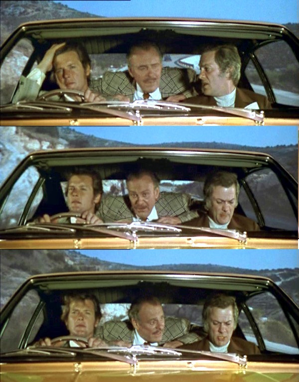
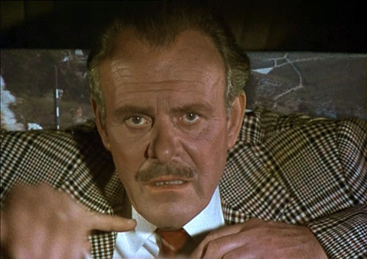
THE PERSUADERS!:Nuisance Value (Leslie Norman: 1971)
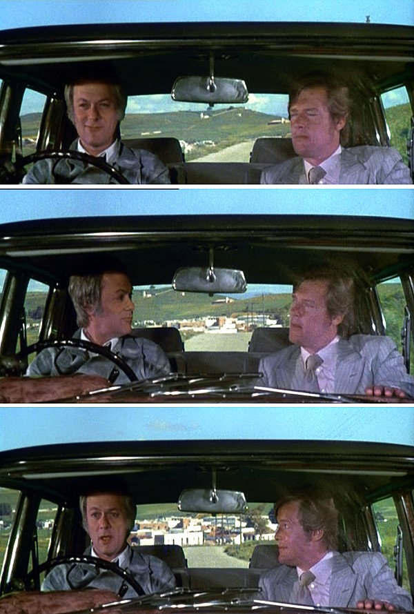
THE PERSUADERS!: Powerswitch (Basil Dearden, June 1970)
Brett and Pico drive the side road where Julie's car had its accident.
Route de l'Aire Saint-Michel Falicon, Provence-Alpes-Côte d'Azur:
Identified by Sietse Postma, 31st July 2018

M114 just entering Falicon, Provence-Alpes-Côte d'Azure:
Identified by Sietse Postma, 5th August 2018

THE PERSUADERS!: Angie...
Angie (Val Guest, June 1970)
Mont Chauve, near Nice, France
Angie tells his friend Danny that he intends to walk to 'freedom' despite the
gun in his hand.
Identified by Sietse Postma, 5th August 2018
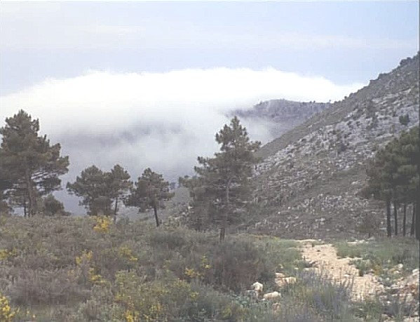
THE PERSUADERS!: Five Miles
To Midnight (Val Guest: 1970)
Unknown 1:

Via dei Funari, Rome, Lazio:
Identified by Sietse Postma, 1st September 2018

Palazzo Missimo alle Colonne,Corso Vittorio Emanuele II, Rome, Lazio:
Identified by Sietse Postma, 5th August 2018
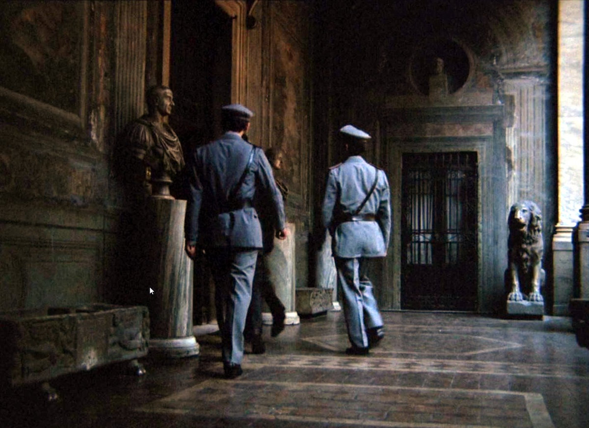
Piazza Giunone Regina, Rome, Lazio:
Identified by Sietse Postma, 2nd September 2018

Unknown 2:
Sidonie
and Frank Rocco look up towards the border towards which they are walking.

Antibes, Juan-les-Pins: Idenified by Sietse Postma, April 2025

107 Avenue de Gairaut, Nice, Provence-Alpes-Côte d'Azur
Identified by Sietse Postma, 5th August 2018


Unknown 4 (probably near Peille): Brett Sinclair, Danny, Sidonie Frank Rocco abandon their stolen bicicles and steal an old truck from a farmhouse.

Mont Chauve overlooking Falicon: After stealing two bicycles and riding two to a bike, Brett Sinclair (Roger Moore) and Sidonie (Joan Collins) and Danny Wilde (Tony Curtis) and Frank Rocco (Robert Hutton) make their way down hill.
Identified by Sietse Postma as being Mont Chauve overlooking Falicon but the exact track is hard to find.
https://www.google.com/maps/@43.7661891,7.2648728,15a,35y,160.94h,77.72t/data=!3m1!1e3


THE PERSUADERS!: Someone Waiting (Peter Medak: 1971)
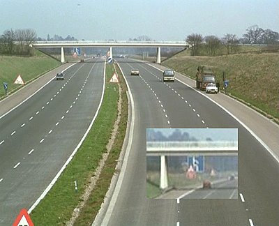
THE PERSUADERS!:The Gold
Napoleon (Roy Ward Baker: 1970)
Identified by Sietse Postma, 4th August 2018
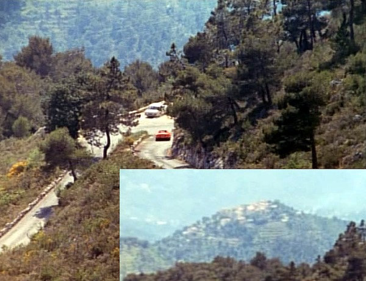
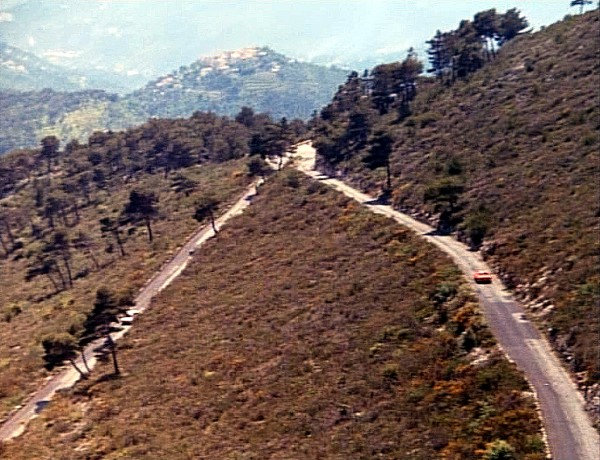
Unknown 1:
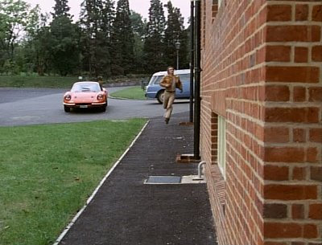
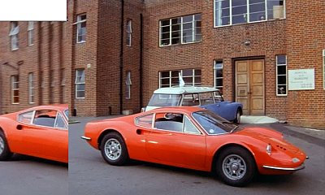
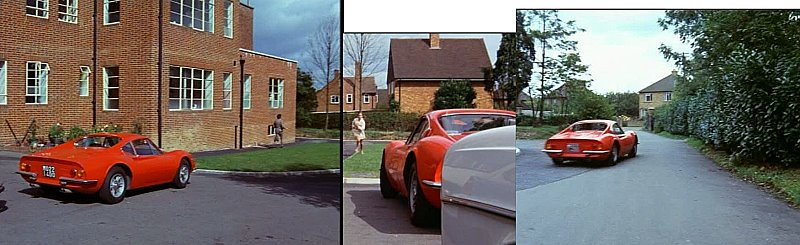
 Probably near
Pinewood.
Probably near
Pinewood.
THE PERSUADERS!: The Morning
After (Leslie Norman: 1971)
'The Pink Villa', 4 Norrkroken, Lidingö, Stockholm, Sweden: Danny
Wilde takes a taxi to Christianson's martial arts academy.
Identified by Sietse Postma, July 2023
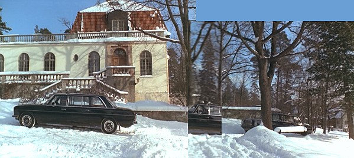
Film:
MISS AND MRS SWEDEN (1969)
THE PERSUADERS!:The Ozerov Inheritance (Roy Ward Baker: October 1970)
Chateau El Masr, Cologny, Switzerland
Identified by Sietse Postma, 8th August 2018


Think you know a spot? Need a bigger image? Email me.
< Previous | Index | Avengerland | Next >
Copyright © 2003 Anthony R. McKay